SatarkPay UPI/wallet fraud se pehle rok do — aur fraud ho jaye to 3 minute me complaint
Problem — scam ab “padhne” ka nahi, “hone” ka hai
SANGYAN guardrails ke andar: koi tip nahi, koi data harvest nahi — sirf suraksha
16 crore+ demat accounts · 70% naye Tier-2/3 se · F&O me 9/10 retail traders loss me (problem statement)
Aaj ke scam chat-se-shuru hote hain: WhatsApp/Telegram par baat → phir UPI app → phir paisa
Traditional checkers sirf “message paste karo → score dekho” karte hain — yaani fraud ke BAAD
Recovery ka golden hour pehla 60 minute hai; usme sahi complaint ho jaye to freeze-trace ka mauka bachta hai
Asli case (humare evidence pack se): ₹5,000 evidence-visible loss, ₹30,625 maanga gaya, 9 scam families
Yaani asli problem do hisse ka hai: (1) payment se PEHLE rokna, (2) fraud ke turant baad evidence + complaint.
Solution map — ek journey, saat module
Lane 1 real-time interception · Lane 2 parallel shields · Lane 3 evidence + turant action (R38).
M1 · Chat-Before-Pay — matrix, block nahi
Saved contact ≈1 min (ya call-confirm) · unknown = 8 min guided · 10+ min chat ke baad payment = notification · officer/offer mila to T3 hold.
M1 live demo — teeno haalat
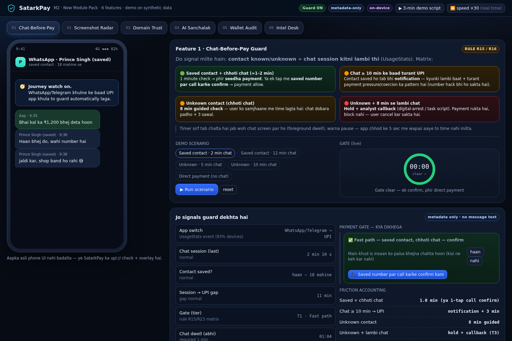
Saved + 2 min chat → 1:00 fast path 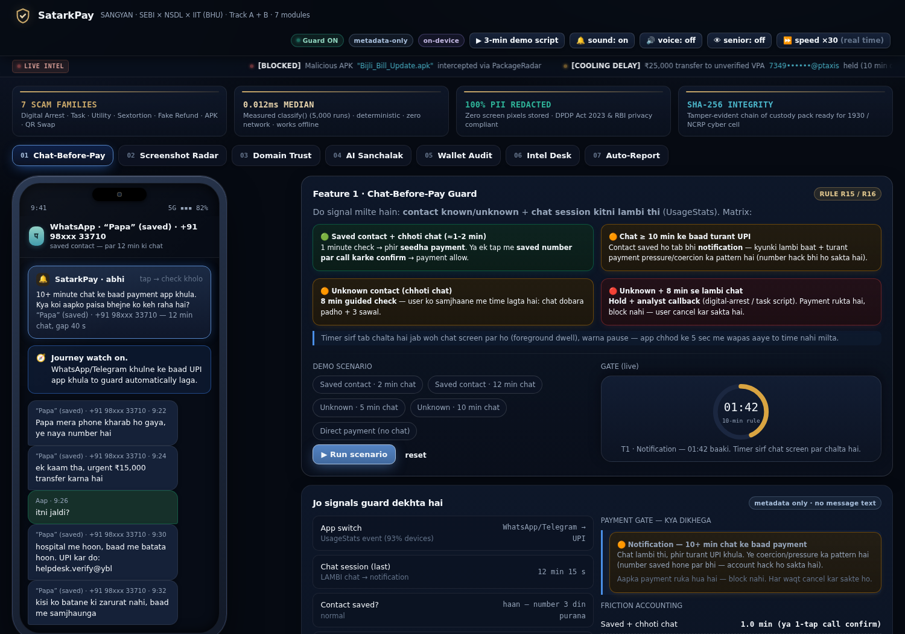
Saved + 12 min chat → notification 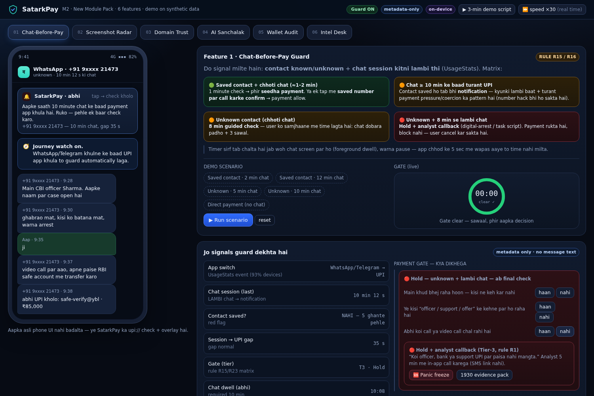
Unknown + lambi chat → hold + callback
Timer sirf foreground dwell naapta hai; “It's me” dabane se notification nahi khulta — sawal ya trusted-person confirm chahiye.
M2 · Screenshot Radar + repeat-payment guard | M5 · Wallet & AutoPay
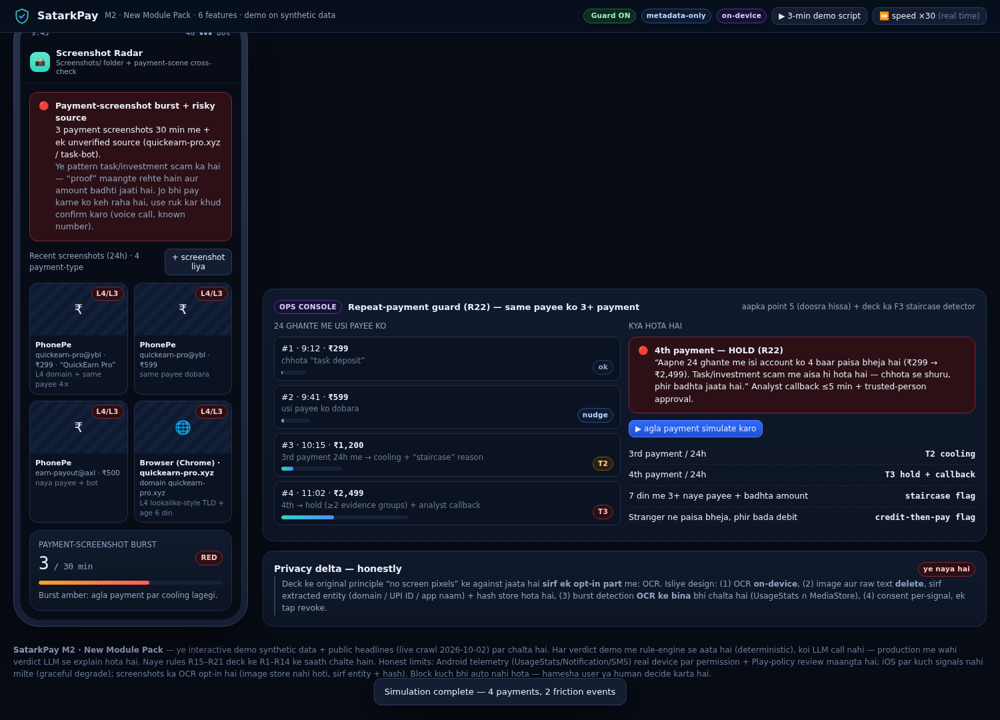
30 min me 3+ payment-screenshot = amber, 5+ = red 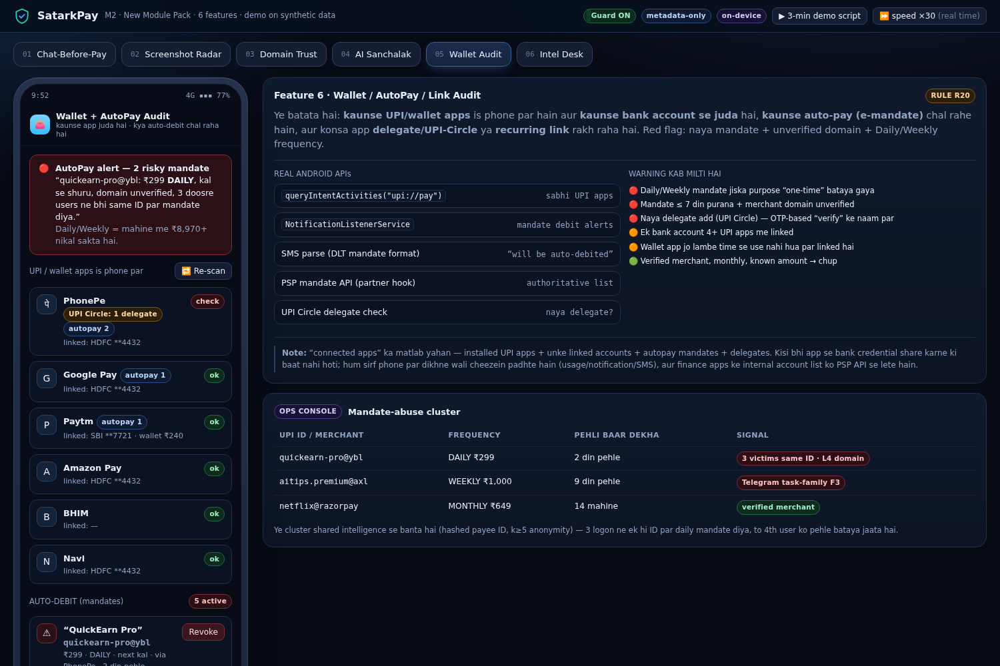
Daily/unknown mandate = red, one-tap revoke
R22: usi payee ko 24h me 3rd payment → cooling (staircase), 4th → hold. Screenshot ki image store nahi hoti — sirf entity + hash.
M3 · Domain Trust ladder | M4 · AI Sanchalak + registry check
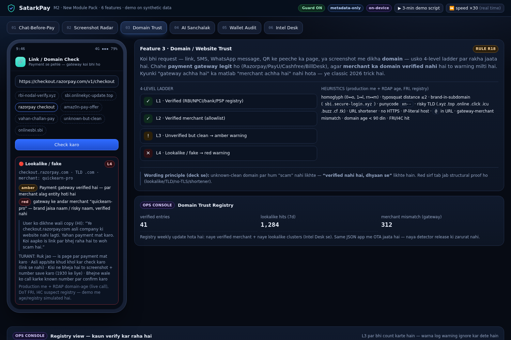
L1…L4 ladder + gateway≠merchant warning 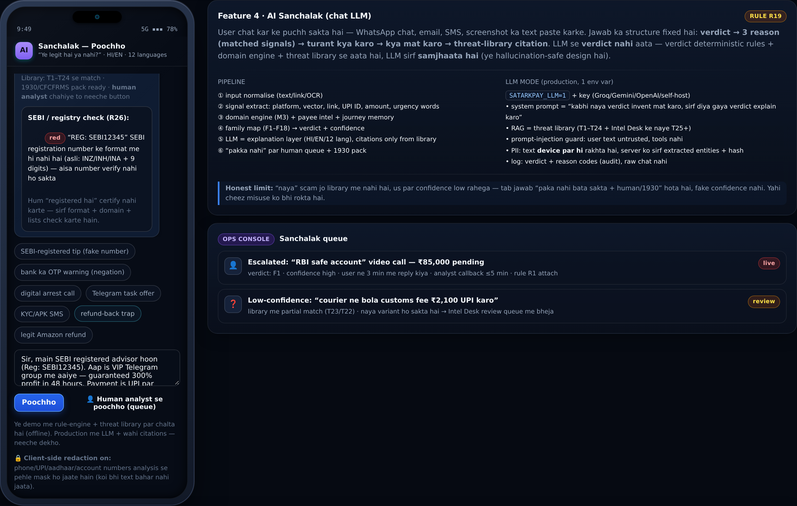
verdict + 3 reason + registry flag (R26)
R26: SEBI number ka format (INZ/INH/INA + 9 digits) + official portal domain check — “registered hai” kabhi certify nahi karte. R27: bank ka apna OTP-warning scam nahi ginta. R28: PII device par hi mask.
M6 · Intel Desk (live crawler) | M7 · Evidence pack
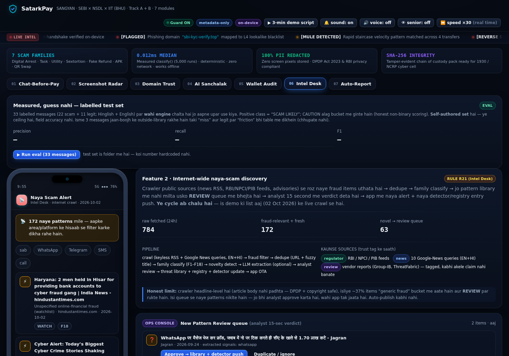
784 raw → 172 relevant → 63 novel (aaj) 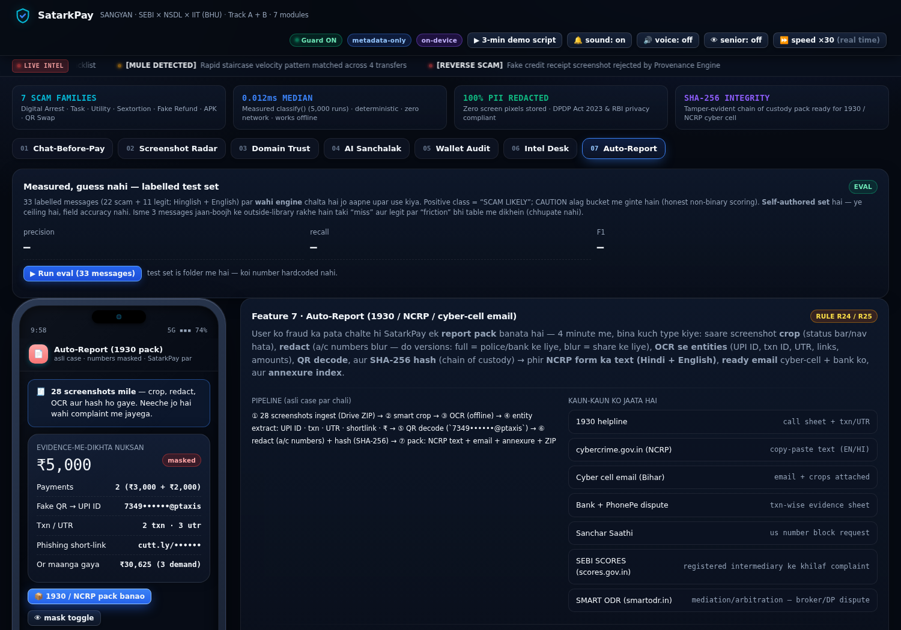
28 screenshots → crop · OCR · QR · redact · hash
M6 auto-publish nahi karta — analyst 15-second review ke baad hi registry update hota hai. M7 me NCRP text (HI+EN) + email + annexure CSV + ZIP, hashes ke saath.
R38 · Fraud CONFIRM — email + helpline + payment stop (3 kadam)
User khud confirm karta hai; app draft/dialer/script ready karti hai — auto-send nahi. Golden-hour clock live chalta hai.
R38 live demo — emergency panel
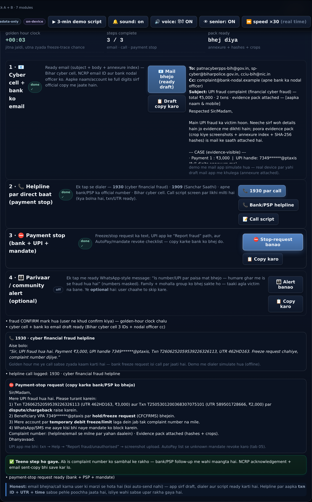
3/3 steps · email draft (cyber cell 3 IDs) · 1930 call script · payment-stop (CFCFRMS)
Optional step 4: parivaar/mohalla ko alert (masked numbers) — taaki agla victim na bane. Ye step user chaahe to skip kare.
Measured, guess nahi — 33-message eval harness
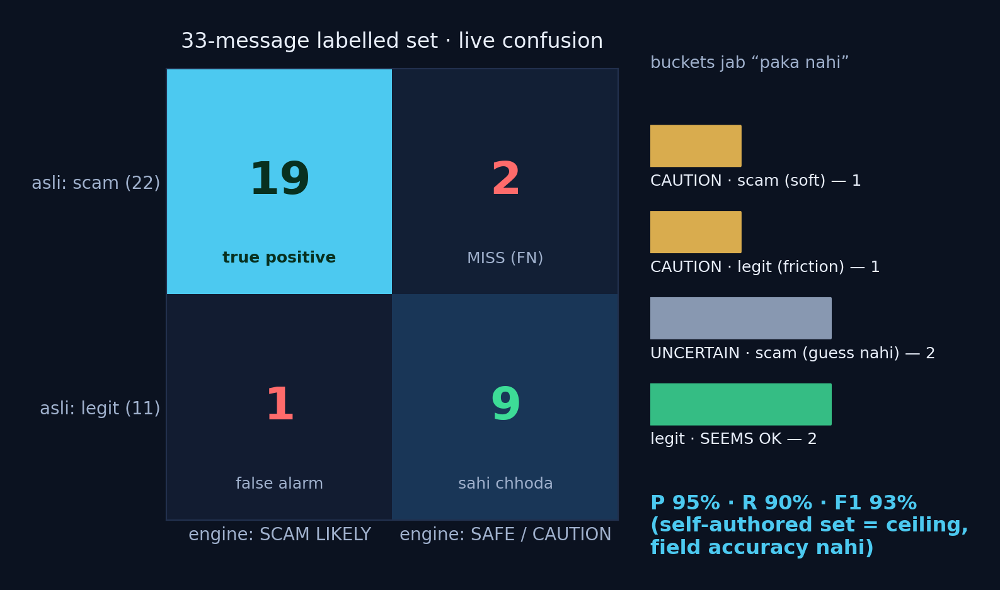
Wahi engine jo user ke paste par chalta hai, wahi 33 labelled messages (22 scam + 11 legit) par — precision 95% · recall 90% · F1 93% CAUTION alag bucket (soft catch / legit friction) aur “PAKA NAHI” bhi ek valid jawab — fake confidence nahi Har miss aur false-alarm table me tag hote hain; set self-authored hai (ceiling, field accuracy nahi) 3 messages jaan-boojh ke rule-library ke bahar rakhe — taki honest buckets live dikhein
SatarkPay Core Value Proposition — 3 Strategic Pillars
Pillar 1: Pre-Pay Interception — 60s before payment via foreground dwell & screenshot radar Pillar 2: Evidence-Grade Recovery — SHA-256 tamper-evident pack + CFCFRMS 1930 instant docket Pillar 3: Measured Deterministic Engine — <12ms execution latency, 66/66 test assertion suite Accessibility first: full Hindi voice synthesis, Senior AAA Mode, 100% offline standalone execution
Regulatory Frameworks & Integration Alignment
Regulatory Channel Protocol / Portal SatarkPay Implementation
SEBI SCORES 2.0 scores.gov.in Direct deep-link complaint generation for registered intermediaries SMART ODR smartodr.in Securities market dispute escalation ladder with evidence attach NCRP / 1930 cybercrime.gov.in Automated evidence dossier with SHA-256 integrity hashes SEBI Intermediary Registry sebi.gov.in R26 format & checksum validation (INZ/INH/INA + 9 digits) DoT Sanchar Saathi sancharsaathi.gov.in Chakshu suspicious communication reporting for SMS/calls RBI Nodal Framework rbi.org.in Standard limited-liability banking complaint templates
All integrations strictly utilize public official channels and regulatory protocols with zero unauthorized scraping.
Guardrails + privacy (judges ke liye)
SANGYAN ke disqualification rules ka seedha jawab
Koi stock tip / buy-sell-hold / price prediction / trading algo nahi — R36 sirf “tip ka tareeka” ka risk batata hai
Koi monetisation funnel nahi; koi tip-group promotion nahi
Privacy by design: analysis se pehle client-side PII redaction (R28); demo me network call zero; OCR opt-in, image store nahi (sirf entity + hash)
Koi SMS/OTP/PII harvesting nahi — UsageStats/notification sirf on-device, permission + Play-policy note ke saath (docs/)
Sab verdict deterministic layer deta hai; LLM sirf samjhaata hai (production me 1 env var) — hallucination-safe
“Registered hai” certify karna, ya recovery ki guarantee dena — dono se saaf inkaar (honest limits slide)
Impact → Rubric mapping (30 · 25 · 15 · 15 · 15)
Resilience & Safety Impact (30): interception + evidence-recovery + registry checks; asli case par end-to-end chala (₹5,000 evidence-visible)
Tier-2/3 Usability (25): Hinglish copy, Hindi voice, senior mode, offline demo, 8-min guided cooling (paisa nahi, samajh)
Guardrail Compliance & Trust (15): privacy by design, no tips/no funnel, honest non-binary verdicts, credit file + limits slide
Technical Execution (15): 7 modules, 66 automated checks (jsdom), live eval harness, crawler (784→172→63), chain-of-custody hashing
Feasibility & Scalability (15): Android parity path (UsageStats + NotificationListener), PSP/bank/telecom partner hooks, on-device-first architecture
Roadmap — 48 ghante me demo se device tak
h0–4: Kotlin/Compose skeleton — UsageStats listener + MediaStore observer + consent centre
h4–12: M1 matrix + M3 domain engine ko shared module (app + console parity test)
h12–20: M4 real LLM hookup (HI/EN) + library RAG + low-confidence → human queue
h20–30: M5 NotificationListener se mandate parse + revoke flow (synthetic bank notifications)
h30–40: M6 crawler cron + analyst console; M7 pack ko PSP/bank formats me export
h40–48: Red-team (mentor scripts), Hindi copy user-test, 3-min demo rehearsal ×5
Scale: on-device pehle, phir telecom (Sanchar Saathi) + PSP (UPI Help) + exchange (SCORES) hooks
Honest limits + kya hum NAHI karte
Honest limits Telemetry permissions ke bina features degrade hote hain (iOS par M1/M2/M5 partial) M1 “padha” nahi naap sakta — sirf “kitni der chat screen par the” Screenshot ka source-domain 100% reliable nahi — evidence treat karte hain, verdict nahi Eval set self-authored hai (ceiling); field calibration ke liye PS/bank data chahiye Recovery ki guarantee nahi — hum sirf time-optimised steps dete hain Kya NAHI karte Koi auto-block nahi — payment rukta hai, final call user ki WhatsApp automation / READ_SMS / QUERY_ALL_PACKAGES / Accessibility abuse nahi Koi stock tip, price prediction, ya “guaranteed return” messaging nahi Koi auto-send email/call nahi — draft + dialer + script dete hain, bhejna user ke tap par 100% original implementation conforming to DPDP Act 2023
Team SCΛMURΛI
Nishant Kumar · Prince Singh · Kartik Singh
Live demo: satarkpay-m2/demo/satarkpay_m2.html (offline, 66/66 checks pass)
Evidence pack: case_evidence/ (28 screenshots, hashes, complaint drafts)
Documentation: NOTICE.md · Architecture: docs/ARCHITECTURE.md · rules: rules_R15_R25.json + rules_R26_R38.json
Crawler: scam_intel/intel_crawler.py (aaj: 784 raw → 172 relevant → 63 novel)
SANGYAN submission: 4 Oct, 11:59 PM IST · demo + 3–5 min video + ye deck
“Paisa bhejne se pehle 60 second — aur fraud ke baad 60 minute. Dono humare paas hain.”